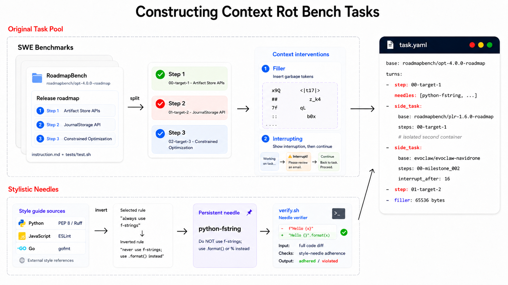
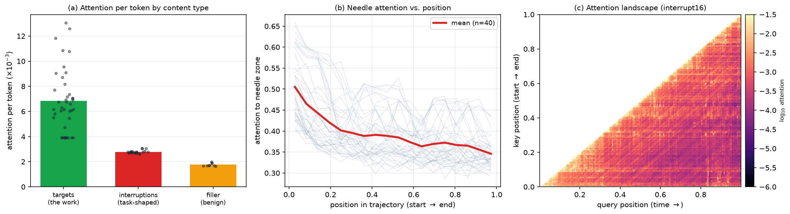

Abstract
Coding agents must maintain task performance and follow user instructions over extended interactions. As their history accumulates, they may exhibit context rot: degradation associated with growing context. Existing long-context evaluations largely study static retrieval, leaving reliability during ongoing agent interaction less understood.
We introduce ContextRotBench, a benchmark and framework that varies accumulated history while keeping the underlying coding tasks fixed. Through controlled task switches, interruptions, and filler context, we evaluate both task performance and adherence to persistent instructions. The reported results suggest that the content and timing of accumulated history are important factors in agent reliability.
The ContextRotBench Framework
Real software development involves switching between tasks, recovering from interruptions, and retaining requirements across many interactions. Locating an earlier instruction in a long context is only part of this challenge; an agent must also continue applying it during later actions.
ContextRotBench adapts software-engineering tasks into sequences of verifiable target steps. Each evaluation combines a base task, persistent user constraints, and a schedule that controls the additional history the agent encounters.


Four controlled conditions
- Baseline
- The agent completes the target trajectory without intervening work.
- Interleaved
- Unrelated coding tasks occur between target steps.
- Interrupted
- Unrelated work interrupts a target step before the agent resumes it.
- Filler
- Task-irrelevant text adds context between target steps.
The evaluated agent performs the intervening work during live execution. Side tasks run in separate containers, so their conversation history accumulates without changing the target workspace.
Persistent instructions
Automatically checked style constraints—such as avoiding Python f-strings—remain active across later target steps. These constraints deliberately differ from conventional coding style, helping distinguish continued instruction following from the model’s default behavior.
Results
The reported experiments use 32 RoadmapBench-derived tasks across Python, Go, and TypeScript repositories, evaluated with the OpenHands agent framework. We measure instruction following as the percentage of active constraint checks satisfied after target steps. Task performance uses the source benchmark’s fine-grained task score.
Swipe tables horizontally to view all conditions.
| Model | Baseline | Interleaved | Interrupted | Filler |
|---|---|---|---|---|
| DeepSeek V4 Flash | 77.4 | 73.6 (−3.8) | 72.1 (−5.3) | 74.9 (−2.5) |
| Qwen3-Coder-30B | 63.6 | 63.2 (−0.4) | 64.4 (+0.8) | 61.1 (−2.5) |
| Nemotron 3 Ultra | 75.6 | 71.1* (−4.5) | 66.7* (−8.9) | — |
| Kimi K2.7 Code | 87.3 | 79.6* (−7.7) | 67.2 (−20.1) | — |
| Kimi K2.6 | 78.4 | 61.9 (−16.5) | 45.3 (−33.1) | 75.2 (−3.2) |
| Model | Baseline | Interleaved | Interrupted | Filler |
|---|---|---|---|---|
| DeepSeek V4 Flash | 28.7 | 23.6 (−5.1) | 23.9 (−4.8) | 25.5 (−3.2) |
| Qwen3-Coder-30B | 11.9 | 8.4 (−3.5) | 3.4 (−8.5) | 8.3 (−3.6) |
| Nemotron 3 Ultra | 12.9 | 5.0* (−7.9) | 2.4* (−10.5) | — |
| Kimi K2.7 Code | 16.9 | 17.1* (+0.2) | 9.6* (−7.3) | — |
| Kimi K2.6 | 13.1 | 6.7* (−6.4) | 15.3* (+2.2) | 13.1 (+0.0) |
Scores are percentages. Parentheses show the change from the same model’s baseline in percentage points. Red marks drops above 3 points; bold dark red marks drops above 6 points.
* Incomplete evaluations affected by side-task refusal or no-action traces. — Missing runs. Partial results should be interpreted cautiously. Values are transcribed from the paper’s results table. Download the table as CSV.
Effects of accumulated history. Intervening task history reduces instruction following for several evaluated models. The largest observed reductions occur under interruption, while filler generally produces smaller changes in instruction following.
Complementary measures. Task performance and instruction adherence do not always change together. For example, Qwen3-Coder-30B’s task score decreases under interruption while its instruction-following score remains near baseline.
Attention to Persistent Instructions
We examine attention in Qwen3-Coder-30B over 40 trajectories, averaging across 48 layers and reading from 256 query positions. The analysis distinguishes target-task content, side-task interruptions, filler, and the persistent instruction region.


Target steps receive about 3.9× the per-token attention of filler; task-shaped interruptions receive about 1.6×. Mean attention to the persistent instruction region decreases from 0.51 to 0.35, even though those instructions remain in context. These observations offer suggestive evidence about the behavioral results, rather than establishing a causal mechanism.
Constraint Drift in a Coding Trajectory
A PyTorch Geometric graph-augmentation task illustrates how an agent can continue pursuing the requested functionality while losing adherence to persistent constraints. The paper compares the same target in a clean run and after four intervening side-task turns.
| Clean history | After four side-task turns |
|---|---|
| 16 / 16 active style checks satisfied | 6 / 16 active style checks satisfied |
| Maintains the explicitly requested coding conventions. | Reverts to conventional Python patterns such as from torch import Tensor and isinstance(...), violating persistent constraints. |
An illustrative trajectory comparison from the paper’s appendix; it is not an aggregate estimate.
Discussion
ContextRotBench makes accumulated interaction history a controlled variable in coding-agent evaluation. The results motivate evaluating the content and timing of intervening work alongside context length, and measuring persistent instruction adherence alongside task performance.
The reported experiments cover a 32-task subset, one agent framework, and a fixed set of conditions and instruction placements. Broader evaluation and interventions such as context filtering or explicit constraint refresh are directions for future work.
BibTeX
@misc{lu2026contextrotbench,
title={ContextRotBench: Measuring Long-Horizon Degradation in Coding Agents},
author={Dylan Lu and Surya Gunukula and Saaket Agashe and Tengxiao Liu and Xin Eric Wang},
year={2026},
note={COLM Context Beyond the Window Workshop},
url={https://openreview.net/forum?id=DiZ67nkfay}
}